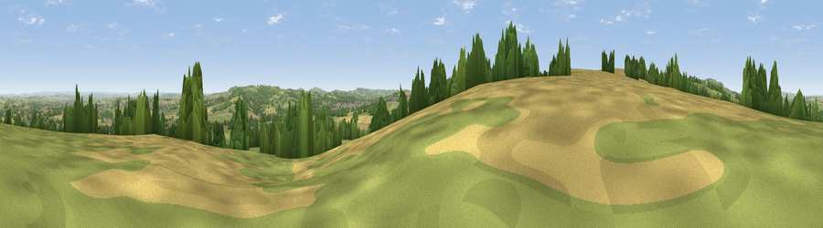

Viewpoint near Wadeford
#8495 in England · top 19% of its area beats it · near WadefordThe view, rendered

A 360° render of this exact spot computed from the terrain model, tree cover and land cover — summer colours, afternoon light, calibrated against photographs of famous viewpoints. Real trees, hedges and buildings will differ in detail.
The panorama
Grey silhouette: terrain skyline in each direction (720 bearings, Earth curvature and refraction included). Dashed green: skyline with trees (+15 m) and buildings (+8 m) as obstacles. Blue strip: how far the ground is visible on each bearing.
Where the view opens
Wedge length = distance to the farthest visible ground on that bearing (vegetation-aware). Rings at 10, 25 and 50 km.
What fills the view
54% grassland · 27% cropland · 16% woodland · 3% built-up
Angular shares of the visible panorama (visual magnitude), not map area. Landscape diversity 0.48 (0–1 Shannon).
Key numbers
More beautiful places nearby
The staircase of upgrades: each row has a higher view potential than everything closer. Driving times are estimates from straight-line distance, calibrated against real road routing — check an actual route before setting out.
| Place | Direction | Drive | Score |
|---|---|---|---|
| Viewpoint near Combe St Nicholas | W · 2 km | ~6 min | 67.9 |
| Viewpoint near Chaffcombe | ESE · 4 km | ~9 min | 68.8 |
| Viewpoint near Buckland St. Mary | NW · 5 km | ~11 min | 72.2 |
| Viewpoint near Buckland St. Mary | NW · 6 km | ~12 min | 77.3 |
| Viewpoint near Hewish | E · 9 km | ~18 min | 78.5 |
| Lambert's Castle Hill | SSE · 14 km | ~26 min | 78.7 |
| Viewpoint near Burstock | SE · 14 km | ~26 min | 81.8 |
| Lewesdon Hill | SE · 16 km | ~28 min | 83.3 |
50.90264, -2.97161 · source: screening · position refined by local search. Computed location — check access rights before visiting.